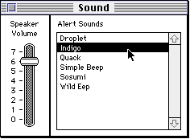
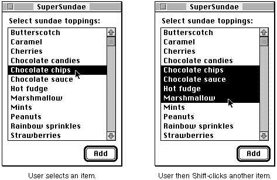
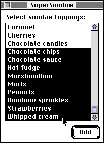
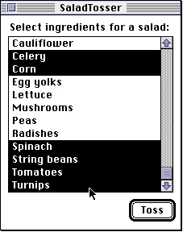
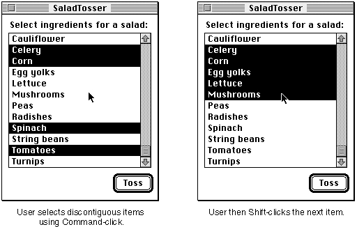
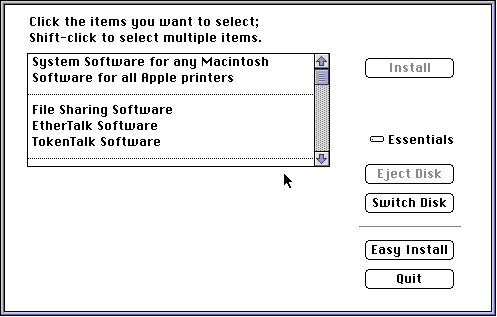

Selection of List Items
Sometimes, an application might create a list simply for the user to view. For example, a desktop-publishing application might create a list of fonts used in a document. The user should be able to scroll the list to examine all of the fonts, but the application can ensure (by ignoring mouse clicks on list cells) that clicking cells of the list has no effect. More often, however, applications create lists so that users can select items from them by clicking the items' cells.Your application can allow the user to select items in a list by calling the
LClickfunction whenever a mouse-down event occurs. TheLClickfunction handles all user interaction, including highlighting of items, until the user releases the mouse button. TheLClickfunction also examines the state of the modifier keys (specifically the Shift and Command keys) and changes the selection appropriately.Figure 4-7 illustrates the Sound control panel, which allows users to select a system alert sound from a list of available alert sounds.
Figure 4-7 A list with an item selected

When the user selects a cell (such as the "Indigo" system alert sound) by clicking the item's cell, the List Manager highlights the cell. In the list shown in Figure 4-7, the user can also select a cell by clicking another cell and dragging the cursor to the desired cell (such as the cell containing "Indigo") before releasing the mouse button. This type of list allows the user to select only one item, because there can be only one system alert sound. While you can create a list that has this behavior, the List Manager by default allows the user to select a range of cells or even several discontiguous ranges of cells by using the Shift and Command keys.The user can use the Shift key to select a range of cells. By pressing the Shift key when clicking a cell, the user can select all items in a given range. For example, in Figure 4-8 the user extends a selection of just one item to cover several items by pressing the Shift key and clicking another item. The List Manager then highlights all cells ranging from the already selected cell to the newly selected cell, thus making the entire range of cells selected. In a one-column list, like that in Figure 4-8, the List Manager highlights a rectangular range of cells in response to a Shift-click.
Figure 4-8 Selection of a range of items in a list

After pressing the mouse button while also pressing the Shift key (but before
releasing the mouse button), the user can extend or shrink the range of cells selected by dragging the cursor. The user can even drag the cursor below the list to select a range that includes items not initially visible. For example, Figure 4-9 illustrates the effect of dragging after the initial selection of the range of cells illustrated in Figure 4-8.Figure 4-9 Effect of dragging after Shift-clicking

Virtually every application that supports Shift-clicking to extend list selections should also support the selection of discontiguous ranges of list cells. The default behavior of the List Manager is to allow a user to add a cell to the current selection by pressing the Command key when clicking a cell. If a user Command-clicks a cell that is already selected, the List Manager removes the cell from the selection.To add or remove a range of cells from the current selection, a user can press the mouse button while also pressing the Command key and then drag the cursor over other cells. The List Manager determines whether to add or remove selections in a range of cells by checking the status of the first cell clicked in. If that cell is initially selected, then Command-dragging deselects all cells in the range over which the cursor passes. If that cell is initially not selected, then Command-dragging selects all cells in the range over which the cursor passes. Once the user changes a cell's selection status by Command-dragging over a cell, the selection status of the cell stays the same for the duration of the drag even if the user moves the cursor back over the cell. In this way, the use of the Command key differs from that of the Shift key.
Figure 4-10 illustrates use of the Command key. This example shows a list created by an application that allows a user to choose what vegetables to include in a salad to be tossed by a device attached to the computer.
Figure 4-10 Selection of discontiguous items in a list

Initially, the user has selected "Celery" and "Corn." By pressing the Command key and the mouse button while the cursor is over the item "Spinach," then dragging the cursor downward to "Turnips" (which automatically scrolls into view), the user can select additional items. Without the feature of Command-clicking to select discontiguous ingredients, a user of this list would be able to select only alphabetical ranges
of ingredients for the salad.If a user Shift-clicks a cell after having created discontiguous selection ranges,
the discontiguity is lost. The List Manager selects all cells in the range of the first
selected cell and the newly selected cell, unless the newly selected cell precedes the
first selected cell, in which case the List Manager selects all cells in the range of the newly selected cell and the last selected cell. Figure 4-11 illustrates how the selection changes when a user Shift-clicks a cell that follows one range of selected cells but precedes another. In this example, after selecting "Celery," "Corn," "Spinach," and "Tomatoes," the user Shift-clicks the item labeled "Mushrooms."Figure 4-11 Effect of Shift-clicking in a list that contains discontiguous items

If a user presses both the Command and Shift keys when clicking a cell, then the pressing of the Shift key is ignored and the List Manager behaves as if only the Command key is pressed.Your application can customize the algorithm the List Manager uses to manage the selection of list items. (You can do this by setting one or more flags in the
selFlagsfield of the list record.) For example, your application can permit the user to select only one element of a list at a time, in which case the Shift and Command keys are ignored.Some applications may wish to make the Shift key work in lists just like the Command key. This is especially useful for applications geared toward novice users, who might not think of using the Command key to select several discontiguous items in a list. If your application uses a nonstandard behavior, then it should make this clear to the user. For example, the Installer application includes a list that treats Shift-clicks like Command-clicks, and it indicates to the user that Shift-clicking selects multiple items. This is illustrated in Figure 4-12.
Figure 4-12 Notifying the user of nonstandard list behavior

The List Manager provides a number of other ways that your application can customize the selection of items within a list. In particular, your application can"Customizing Cell Highlighting" beginning on page 4-29 discusses the techniques that your application can use to customize the selection of lists.
- allow only one item to be selected at a time. (By default, the List Manager allows multiple items to be selected.)
- allow the user to select a range of items by clicking the first item and dragging to the last item without necessarily pressing the Shift or Command key. Ordinarily, dragging in this manner results in only the last item's being selected.
- disable discontiguous selections, while still allowing the user to select a range of items.
- cause all previously selected cells to be deselected when the user Shift-clicks.
- allow the user to deselect a range of cells by Shift-dragging. Ordinarily, Shift-dragging causes cells to become selected even if the first cell clicked is already selected.
- disable the feature that allows the user to shrink a selection by Shift-clicking to select a range of cells and then dragging the cursor to a position within that range. When this feature is disabled, all cells in the cursor's path during a Shift-drag become selected even if the user drags the cursor back over the cell.
- turn off the highlighting of selected cells that contain no data.